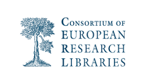
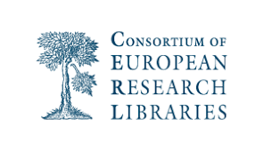
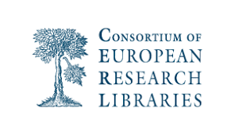

Libraries and other cultural heritage organisations (CHOs) and their staff occupy a central role in digital humanities. Given the importance many of these organisations attach to their role as supporters of research, a case can be made for the opportunity and need for libraries and their staff to position and assert themselves as partners in research.
This full-day pre-conference was held in The Hague on 8 July 2019. The program aimed to address the complexities of positioning libraries (and other CHOs) as digital humanities research partners. The question of CHOs and librarians as service providers or partners is a well-established, rich territory, with implications for labour and status. However, many are still finding their place in digital humanities due to questions of institutional commitments and external expectations. This pre-conference invited contributions addressing the topic of building trustworthy and sustainable research partnerships in digital (humanities) research that recognize the expertise of CHO staff.
The organizers are grateful to the National Library of the Netherlands, who hosted this event and provided livestreaming of many sessions. Lotte Wilms was instrumental to the event's success. Recordings of those sessions are available on the KB YouTube channel. We are additionally thankful to our excellent presenters, who have shared slides and other materials from their presentations in our Zenodo community. Please visit our programme page for further details.
